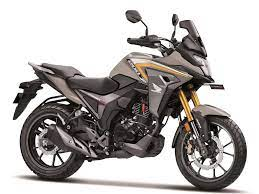
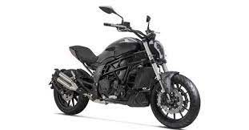
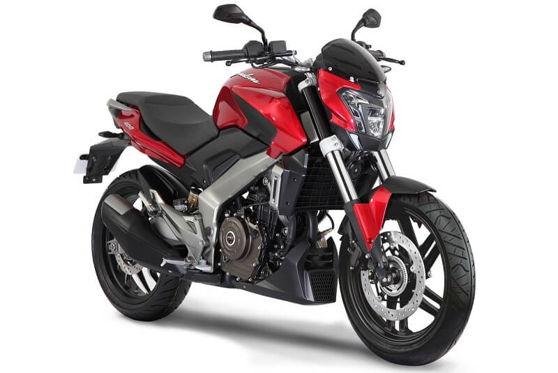

Honda CB200X
new advevture bike
jan 20, 2022
Honda has finally lunched its new bike in india with the price tag of 1.44 ex showroom. this will be first ever low cc adventure bike in india as well as in nepal. this bike might be available for test ride in september. as we can also guess this bike will be soon lunched in nepal, but price might be quite high in nepal beacuse of tax.As we all know few days ago hornet 2.0 was lunched with the price tag of 4 lakh 60 thausand . people were angry because it was expected to around 3 lakh 4 thousand to 3 lakh 60 thausand. so from the price of hornet 2.0 i guess price of Honda CB200X would be around 5 lakh in nepal.
Read More

Benelli 502s
upcomming benelli bike
jan 20, 2022
According to the latest news benelli is going to lunch new 500cc bike in india as well as in nepal. it will be the most affordable bike in segment with small seat height, making short height people easier to ride . since it is 500cc bike so it has less milage but benelli provide bike with 12 L fuel tank capacity, it will go on a decent distance.
Read More

Dominar 250
A huge update
jan 20, 2022
As per the rumors bajaj is going to lunch bew bike in south asian market .soon it will be lunch in th market. it will be one of the best budget segment bike in nepal and indian market. science is no 1 company in india as well as nepal people will be expecting best performance from bajaj pulsar 250 f. it will compete against KTM 250 and other 250 segment bike in the market.
Read More